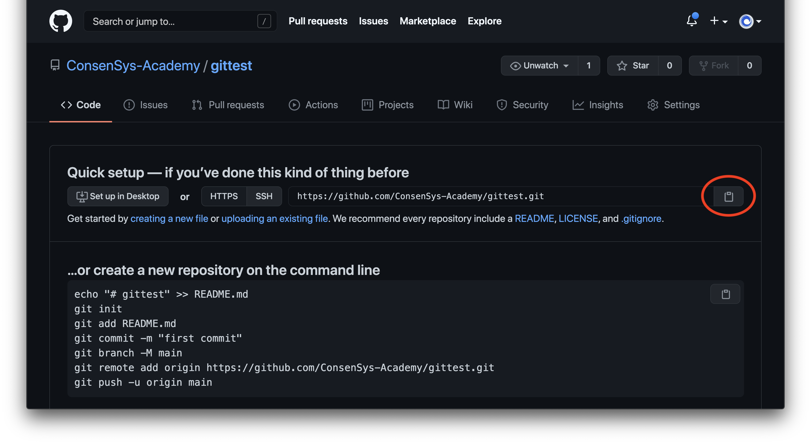

Making and Pushing Your First Git Repository
In this section, we're going to walk through the entire process of setting up a fresh Git repository on your local machine, adding some files to it, committing those files and pushing the commits to a remote repository we've setup on Github. While it sounds simple, give yourself some time and leeway to work through the tutorial as it's the first proper one in the course. Don't be afraid to ask questions in the Discord if you need help (see the link at bottom of the page!).
Create a New Repository on Github
Before we create our repository on our machine, we want to create a place for it on Github. Make sure you're signed into Github and go to this link to create a new repository. You should see something similar to below:
Under "Repository Template" choose "No Template", like in the image above. Think up a name for your Git project and type it in the box labeled "Repository Name", which is also circled in red in the image above.
Don't select any more options and scroll to the bottom of the screen. Click the green button labeled "Create Repository." If all is successful, you should see something similar to the image below:
Be sure to copy the address for the Github repository, a URL that will end in .git. You can copy it by clicking the clipboard next to it, circled in red in the image above. Save the URL somewhere you can access it later.
Make a Directory
From your command line, create a directory with the same name as the repository you just created in Github. We can do this by running the command $ mkdir directoryname, where directoryname is the same name as the Github repository. This will create another directory in the current directory you're in. Once you've made the directory, navigate into the directory by running $ cd directoryname. You're on your way!
Init
Once you're in the directory, please run $ git init. This will add the .git file (hidden by default) which transforms your plain old directory into a Git repository!
Create a File
Using the control flow we learned in the command line section, we're going to create a simple file in our Git repository. Run the following command and see if you can guess what it's doing before reading on:
$ echo "# my first git repo" >> README.md
This command puts the characters in the quotes into the file README.md. Since that file doesn't exist, our command line creates it.
Add File
Git requires a two-stage process to actually make a commit. The first is to "stage" the changes you wish to add to the commit. We'll do that step now. First, run the command $ git status to see that your README.md file is unstaged. Run the command $ git add README.md. You won't see any activity from the terminal except a new prompt line. But if you run $ git status again, you'll see that now your README.md file is "staged" for a commit.
Commit
Committing is scary, but this is an easy first one! The syntax for a Git commit is git commit -m "YOUR COMMIT MESSAGE HERE". The commit message is meant to be short (about 50 characters) but descriptive about the changes the commit will make when applied to the repository. If you're having trouble writing a short commit message, you may be committing too many changes at once (source).
The first commit message is easy. You can say something like, "makes my first commit" or even "first commit". As you go on with a project, you want to make them a bit more descriptive. This way, if you have to roll back your repository for some reason, you can glance at the commit messages to get a sense of how far back you need to go.
Make your first commit for this repository by running the command $ git commit -m "YOUR COMMIT MESSAGE HERE"
Name Your Branch
The syntax for naming (or renaming) your branch in git is git branch -m YOUR-BRANCH-NAME. Let's go ahead and name our branch main by running $ git branch -m main. If we create a repository in Github, the website will name the first branch main by default.
Add Remote Address
As we mentioned in the first section, typically a Git repository will have a central or common repository all the contributors push to or pull from. This repository is called the remote repository. For our tutorial, the remote repository is the one we setup on Github in the first step. Be sure to have its address (ending in .git) nearby as we're about to need it.
We need to tell Git which remote repository we'd like to follow. This is where we will push our commits and pull any commits made by others. We can add a remote repository with the following command:
$ git remote add origin YOUR_GITHUB_URL_ENDING_IN.git
We won't cover what origin means, as it's a bit complicated, but it's essentially what we're naming our remote repository. If you'd like to learn about origin and remote you can read this Stack Overflow answer here.
Push
Now, the moment of truth! If you've setup your credentials properly in the last module, you will be able to push your commit to the remote Github repository with the following command:
$ git push -u origin main
This will push our commit to the remote repository (named origin), specifically to its branch main. To check if you were successful, refresh the Github repository page you setup in the first step. You should see your README file!
Git is an incredibly powerful language but also simple for every day use. It's not unusual for developers to have to look up Git commands, especially if it's out of the ordinary git clone, git commit, git push, git pull, etc. We'll go over some resources for that in an upcoming section.